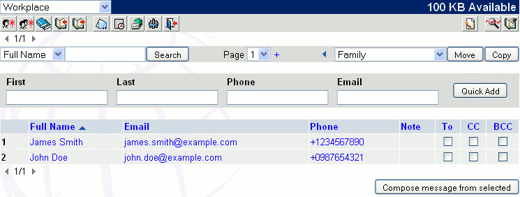

| The address book is a small database of your regular e-mail contacts, that allows you to have quick and easy access to them at any time. First, you will need to create entries in your address book (Note: there may be entries and Address Books that have been set by the system administrator). You can create new entries and also store the sender information of a message you are reading. Then you will be able to use these entries to write new messages.
To create a new entry, click the Address Book icon (
) in the main toolbar. You will be redirected to your current Address book. This is an example of an Address Book named Workplace:

You can quickly add an entry when you have selected an Address Book in the top left box: click within the First Name text field and enter the necessary information. Use the "Tab" key on the keyboard to jump to the next field. Once you are finished entering the information, click Quick Add button. The new entry will then appear in the bottom list of entries.
To add an entry with detailed information, click the new contact icon ( ) in the Address Book toolbar. You will be redirected to Address Book editing section. Entry is added to Address Book when you click on Save button (see Editing an Address Book Entry).
You can also group multiple addresses into one name. This allows you to send to multiple existing entries, with one address book entry, without having to re-enter the information. To group multiple addresses, click the group icon (
). You will be greeted with a new window where you can set email addresses that are part of the group. Click the address book icon in this new window (
) to simply check the addresses you wish to group, and click Done. Then click Save once you are finished creating the group.
To add the sender of a message, click on the import icon ( ) when you are reading a Message. After a confirmation window, you will be redirected to Address Book editing section, with First, Last and Full Name information automatically filled. If you wish, you can then add more information. Entry is added to Address Book when you click on Save button (see Editing an Address Book Entry).
To delete an entry in the address book, see Editing an Address Book Entry.
| ){kind=link}